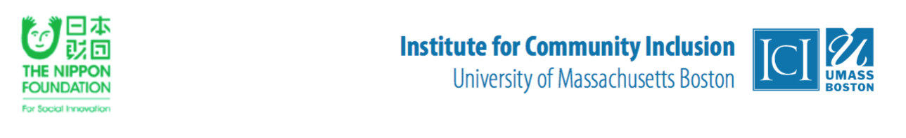

より良い支援を障害学生に提供するために、日本の高等教育機関の障害学生支援およびキャリアサービスに携わる職員を対象にリーダー育成研修を実施します。本研修は、米国マサチューセッツ州ボストンにて行われます。
各年、日本の高等教育機関３校からの職員を研修生として受け入れます。障害学生の学業上の成功とキャリア開発を支援する研修参加者やその所属機関の能力構築を目的とします。
この３年間（２０１６年−２０１８年）にわたる本事業は、日本財団からの助成金により、マサチューセッツ州立大学ボストン校地域インクルージョン研究所 (ICI)にて実施されています。
本事業では、障害学生支援体制の確立やキャリアサービス・就職支援の設置を既に行っていることに加え、障害学生支援とキャリアサービス・就職支援の担当職員が何らかの関わり、または連携活動を目指している日本の高等教育機関３校を募集します。国公立・私立を問いません。学生課や保健サービスなどその他の部署が障害学生支援を行っている場合も募集の対象となります。
各高等教育機関は、障害学生支援とキャリアサービスの担当職員それぞれ１名（計２名）を本研修に派遣します。研修生を派遣する高等教育機関は、障害学生への包括的な支援の提供を行うために障害学生支援の向上と学内のキャリアサービスとの連携において組織としてのコミットメントを示す必要があります。
本研修では、大学構内で障害学生支援とキャリアサービスに携わる職員に極めて重要な情報を提供します。参加者には、１９９０年の障害のあるアメリカ人法 (ADA法) の施行によって米国が学んだ教訓への洞察を得るユニークな機会が与えられます。
また、参加者は研修後、障害学生支援における各自の力量に対する更なる自信と支援方法や内容について短期的および中期的な改善を行うための具体的な計画をもって各所属機関での業務に従事します。
１週間にわたる集中リーダー育成研修（２０１8年１０月２１日から２6日）は、ボストンの地域インクルージョン研究所（ICI）にて行われます。主な研修内容は、以下の通りです
研修は、講義、ゲストによる講演、少人数でのグループディスカッション、対話型のグループワーク、その他の研修形式を組み合わせて実施されます。ボストン現地では、主にマサチューセッツ州内の様々な大学（州立、私立、短大）の障害学生支援室とキャリアサービス室の視察を行います。視察を通し、支援室の教職員の活動内容や職場の様子、学内または企業を含めた学外の支援パートナーとのコラボレーションについて学びます。また、支援室を利用する障害のある学生との対話の機会も含まれています。
ボストンでの研修に先立ち、研修参加者は３、４回にわたるウェブキャストにて、アメリカと日本の障害問題や高等教育における就労・キャリアに関する基本的な情報状況を学びます。また、各自の所属機関における障害学生支援とキャリアサービスに対する評価をオンラインにて行います。調査結果は、参加者が障害支援やキャリアサービスの提供を向上させるための２〜３項目の活動を特定する際に利用され、本事業は、参加者やその所属機関がそれらの変革を行う際に支援や指導を提供します。
本研修は、障害と高等教育において幅広い経験持つICIの上級スタッフと、障害、高等教育機関、職業リハビリテーション、キャリアカウンセラーとして現場で活躍される数々の専門家によって実施されます。研修は、日本語の通訳を介して英語で行われます。
本研修の全日程を終了し、必要書類の提出など条件を満たした方に、「障害学生支援とキャリアサービスの提供におけるリーダー育成研修修了証書」を交付します。
国際航空運賃、海外旅行保険料、ホテル宿泊費、食費、ボストン市内の交通費等、参加者に係る費用は全て本事業が負担します。障害に応じた配慮は、事前リクエストにより提供します。
ご不明な点がございましたら、下記担当者までお問い合わせください。 マサチューセッツ州立大学ボストン校 / ICI 上級研究員 Dr. Heike Boeltzig-Brown
| ２０１8年４月２日 | 応募締切 |
| ２０１8年６月１日 | 選考結果の通知および参加者の選定 |
| ２０１8年６月〜９月 | ボストンへの渡航準備期間 |
| ２０１8年１０月２0日 | ボストンへ出発 |
| ２０１８年１０月２１日〜２６日 | ボストンにてリーダー育成研修 |
| ２０１８年１０月２7日 | 日本に帰国 |
| ２０１８年１１月〜２０１９年２月 | 研修後のフォローアップ活動実施期間 |
| ２０１９年１月３1日 | 進捗報告書①の提出締切 |
| ２０１９年４月３０日 | 進捗報告書②の提出締切 |
| ２０１９年8月３0日 | 最終報告書の提出締切 |